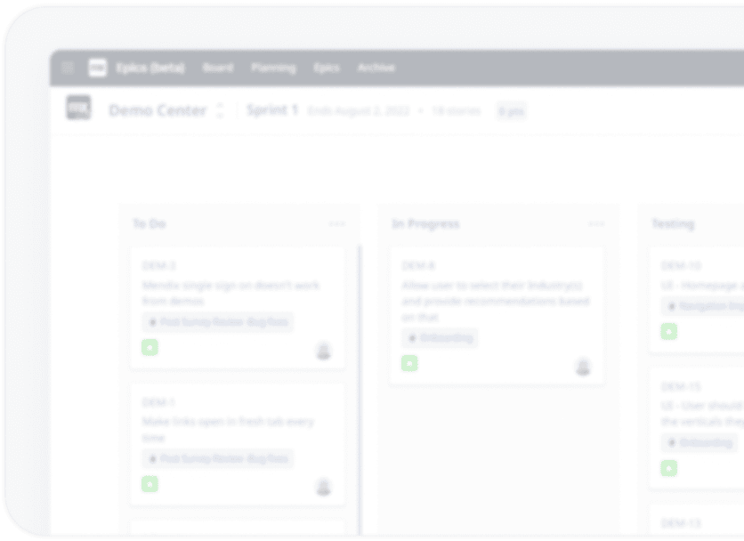
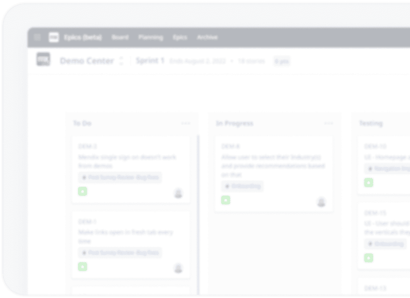

Mendix
복잡한 소프트웨어 개발 과제를 위한
유일한 AI 기반 로우코드 플랫폼
Mendix는 기업이 비즈니스 프로세스를 쉽고 빠르게 디지털화할
수 있도록 해주는 선도적인 로우 코드 모바일 및 웹
애플리케이션 개발 플랫폼입니다. 올인원 로우 코드 플랫폼인
Mendix로 개발 프로세스를 최적화하고 자동화하여 고품질의
소프트웨어를 더 빠르게 만드실 수 있습니다.

Mendix 공식 파트너사
Vanguardlab이 제공합니다.
Mendix의 공식 파트너사로서 Mendix Certification을 보유한
숙련된 개발진
국내 최다 Mendix Advanced 인증 개발자를 보유
금융권 특화 솔루션 개발에 특화된 국내 유일의 Mendix 전문
기업
도입 전략 수립 - 시스템 구축 - 운영까지 전 과정에 대한 전문적인 컨설팅 제공
금융권 실무 경험을 바탕으로 한 Mendix 역량 강화 교육
프로그램 제공
 

Mendix의 주요 기능을
확인해 보세요.

매력적인
사용자 경험
로우코드 플랫폼과 기본 제공되는 React Native
프로엠워크만으로도 iOS와 Android에 적합한 모바일
앱 제작이 가능합니다. 대화형·몰입형 경험을 통해 한
단계 더 나아가세요. 역량에 제약 없이 하나의
플랫폼에서 모든 것을 구축할 수 있습니다.
원하는 IDE 선택
모든 개발자에게 IDE 맞춤 설정되어 있습니다. WYSIWYG는 비즈니스 사용자를 위한 노코드 IDE(Mendix Studio)이며 로우코드 IDE(Studio Pro)는 전문 개발자용 입니다. 두 IDE는 양방향으로 동기화됩니다.
명확한 협업
팀 개발, 피트백 관리, 애자일 프로젝트 관리 등을 위해 내장된 협업 툴을 사용해 보세요. 애플리케이션 라이프사이클 내내 효과적인 비즈니스-IT 커뮤니케이션이 이루어 집니다.
훌륭한 디자인과 접근성
Atlas UI 프레이워크로 사용자 경험을 완성하여 여러 기기에 설정 가능한 반응형 설계를 구축하세요. WCAG 2.1 레벨 A 및 AA 지원을 통해 액세스 가능해 집니다.
시각화, 빌드, 재사용
고도로 시각화된 모델 기반 개발 환경을 통해 애플리케이션 제공 속도가 빨라집니다. 앱 컴포넌트를 Mendix 마켓플레이스에서 공용 혹은 프라이빗하게 재사용하도록 하거나, 400여개 이상의 빌딩 블록을 큐레이셔한 라이브러리에서 선택해 재사용할 수 있습니다.
지능형 개발
최초로 AI 개발 어시스텐트 "Mendix Assist"를 내장해, 초보 개발자를 멘토링하고 전문 개발자의 생산성과 역량을 개선하여 개발 프로세스를 간소화하고 속도를 높여줍니다.
클라우드 네이티브 확장
클라우즈 네이티브 기반이며 12가지 요소로 구성된 마이크로서비스 아키텍쳐에서 실행되는 애플리케이션을 활용해 클라우드 운영을 간소화 하세요. 번거로운 재설계 과정 없이 수직 및 수평으로 확장할 수 있습니다.
원클릭 배포
비즈니스의 보안·데이터·툴링 통합 요구사항에 영향을 주지 않고도 클릭 한 번으로 퍼블릭, 프라이빗 또는 하이브리드 클라우드에서 실행할 수 있습니다.
Mendix · FAQ
Q.
프로그램 개발 시간을 단축할 수 있나요?
A.
로직(Microflow), 데이터 모델(Domain Model), UX(Atlas UI)를 Drag & Drop 방식으로 쉽고 빠르게 개발하고, 다양한 비즈니스 관계자의 협업을 지원합니다.
Q.
보수유지가 얼마나 쉽고 안정적인가요?
A.
로직(Microflow), 데이터 모델(Domain Model), UX(Atlas UI)를 Drag & Drop 방식으로 쉽고 빠르게 개발하고, 다양한 비즈니스 관계자의 협업을 지원합니다.
Q.
비용을 절감할 수 있나요?
A.
네. 개발시간이 단축되어 개발비용이 절감됩니다. 또한
직관적인 환경 세팅으로 개발자들의 접근이 용이하고
파트너사도 쉽게 참여할 수 있어 인력비용 절감에도
도움을 줍니다.
Q.
개발자와 비즈니스 사용자의 접근이 용이한가요?
A.
로직(Microflow), 데이터 모델(Domain Model), UX(Atlas UI)를 Drag & Drop 방식으로 쉽고 빠르게 개발하고, 다양한 비즈니스 관계자의 협업을 지원합니다.